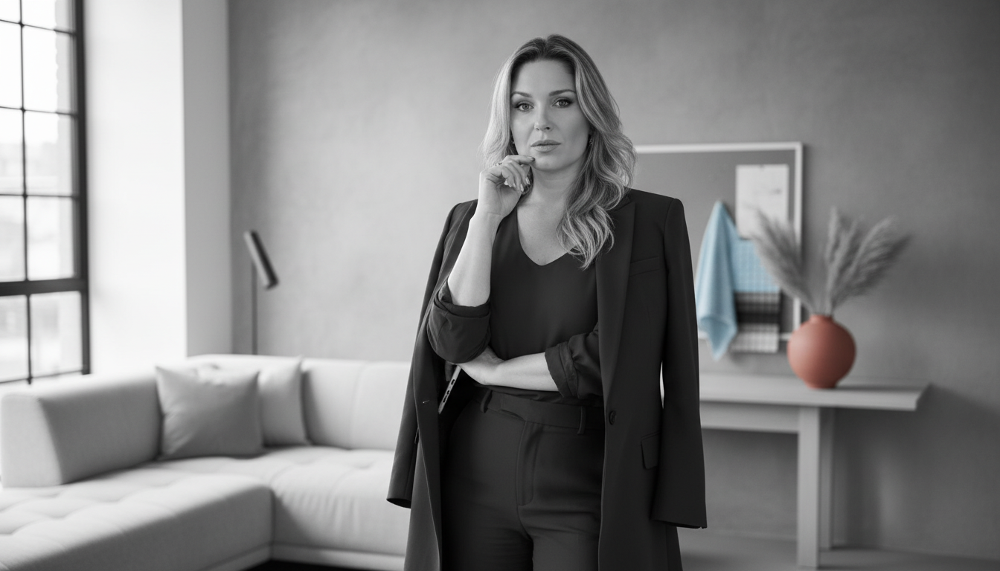

Sobre nós
Acredito que cada espaço conta uma história. Com mais de 10 anos de experiência, crio ambientes que unem funcionalidade, beleza e identidade.
Conheça mais →Sobre nós
Acredito que cada espaço conta uma história. Com mais de 10 anos de experiência, crio ambientes que unem funcionalidade, beleza e identidade.
Conheça mais →